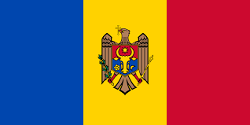
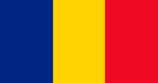
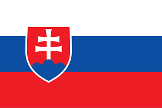

Day 5: Exploring Central and Eastern Europe
Introduction to Central and Eastern Europe
Central and Eastern Europe is known for its diverse landscapes, from mountains to plains, and its rich cultural heritage. It has many historic cities and beautiful architecture.
Big Cities
Some of the biggest cities are Warsaw, Budapest, and Prague. Each city has lots of interesting things to see and do.
Famous Places
Central and Eastern Europe has many famous landmarks, like the Prague Castle in the Czech Republic, the Buda Castle in Hungary, and the Wawel Castle in Poland.
Culture
People in Central and Eastern Europe speak languages like Polish, Hungarian, and Czech. They celebrate festivals like Easter Monday and enjoy foods like pierogi and goulash.
Heroes
Heroes from Central and Eastern Europe include Marie Curie from Poland, who was a famous scientist, and Franz Kafka from the Czech Republic, who was a famous writer.
Countries, Their Flags, and Capital Cities in Central and Eastern Europe
| Country | Flag | Capital City |
|---|---|---|
| Belarus |  |
Minsk |
| Bulgaria |  |
Sofia |
| Czech Republic |  |
Prague |
| Estonia | Tallinn | |
| Hungary |  |
Budapest |
| Latvia |  |
Riga |
| Lithuania |  |
Vilnius |
| Moldova |  | Chisinau |
| Poland |  |
Warsaw |
| Romania |  | Bucharest |
| Russia |  |
Moscow |
| Slovakia |  | Bratislava |
| Ukraine |  |
Kyiv |
Poland

Czech Republic


Hungary


Romania


Ukraine
Belarus

Bulgaria


Did you know?
Central and Eastern Europe is home to some of the oldest cities in Europe, including Prague and Krakow.
The Hungarian Parliament Building is one of the largest buildings in Europe.
Warsaw, Poland's capital, was almost completely destroyed during World War II and was rebuilt after the war.